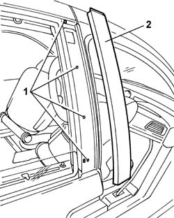
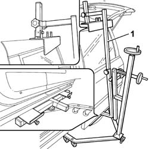
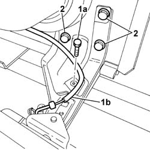
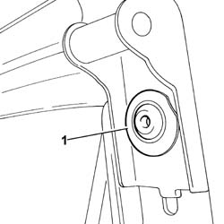
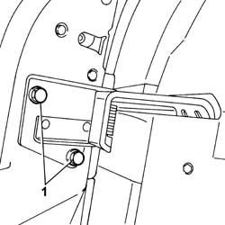
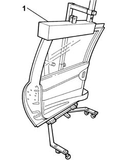

7210E40 GLAZED SLIDING SIDE DOOR
- Path
- Procedures > 72 PANELS AND FRAME > 7210 REMOVING REFITTING > 7210E EXTERNAL PARTS > 7210E40 GLAZED SLIDING SIDE DOOR
- Kind
- repair procedure (removal / refitting; the operation number is the code)
- Applies to
- all engines; all production periods
- Interactive page
- https://sloeber94.github.io/elrnDB-fUlss/en/#/179007972
Applies to: all engines; all production periods
 Removing
Removing
 Refitting
Refitting1. Release the pillar cover from the retaining clips and remove it.

Applies to: all engines; all production periods
1. Position the sliding side door support tool.

Applies to: all engines; all production periods
- Remove the lower support cover.
1. Undo the bolt retaiing the rear side door safety rod (1a) and move it away from the work area (1b).
2. Undo the bolt fixing the rear side door and the lower sliding element.

Applies to: all engines; all production periods
1. Undo the bolts fixing the sliding side door and the upper sliding element.

Applies to: all engines; all production periods
1. Undo the bolts fixing the rear side door and the rear sliding element.

Applies to: all engines; all production periods
1. Remove the glazed sliding side door.

Applies to: all engines; all production periods
Refitting
Removing- Check that the door is not damaged.
- If necessary, retouch the paintwork.
- Fit the glazed sliding side door.
- Tighten the bolts fixing the sliding side door and the rear sliding element.
- Tighten the bolts fixing the sliding side door and the lower sliding element to torque.
- Tighten the bolts fixing the sliding side door and the upper sliding element to torque.
- Reattach the rear side door safety rod and tighten the fixing/adjustment bolt.
- Remove the sliding side door support tool.
- Fit the front pillar trim.
- Attach the front pillar fastening clips.